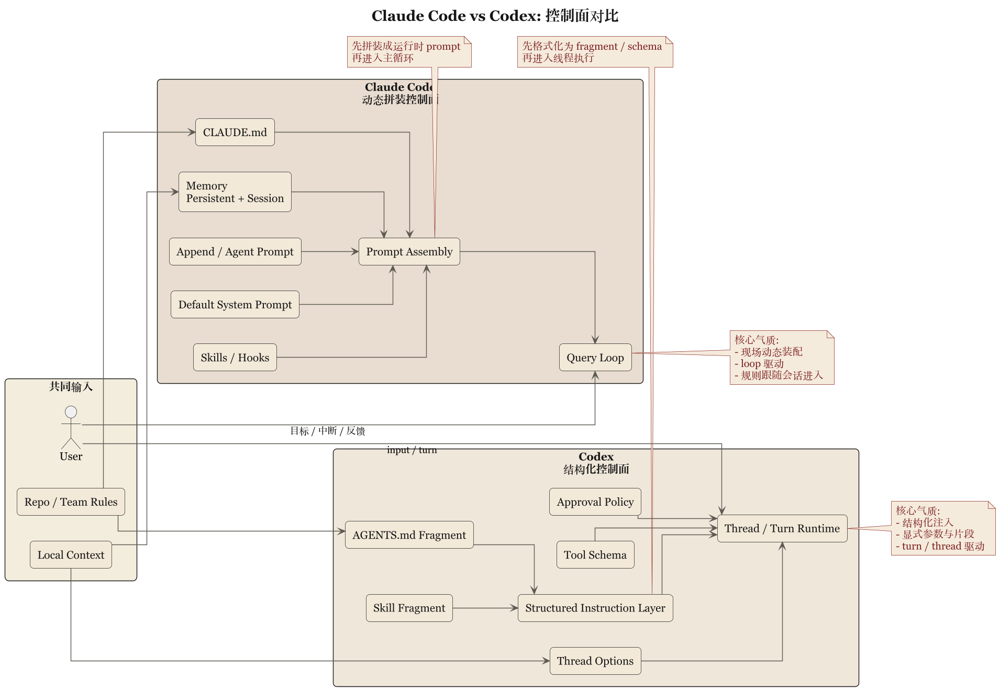

第 2 章 两种控制面：Prompt 拼装与 Instruction Fragment

2.1 控制面这件事，首先不是文风问题
很多人谈 prompt，谈着谈着就会落到文风上。仿佛系统控制的核心，是把一段文字写得更像老工程师，或者更像耐心导师。这样理解 prompt，多少有点把警察制度理解成说话语气。
Claude Code 和 Codex 的共同点在于，它们都不这么看。它们都把面向模型的指令，当成行为控制的一部分。只是实现方式不同。
Claude Code 采用层层拼装。constants/prompts.ts、utils/systemPrompt.ts、claudemd.ts、memory 与 output style 等内容，会按运行时条件注入到 system prompt 里。这里最重要的是分层拼装逻辑，而不只是文案本身。真正起作用的，是多个来源在同一控制面里如何排优先级、如何避免互相打架。
Codex 更接近结构化片段。instructions/src/fragment.rs 里定义了 AGENTS.md 和 skill 的 fragment 标记；user_instructions.rs 则把用户指令序列化成带目录和边界标记的消息。这意味着 Codex 并不把 instruction 当成一块随意串接的自然语言，而是把它当成“有开始、有结束、有来源类型”的上下文单元。
这两种做法都有效，但透露出不同的系统性格。
2.2 Claude Code 的控制面是动态装配线
Claude Code 的 system prompt 设计，有一个相当朴素的前提：控制面会随着当前任务、memory、工具能力和团队注入发生变化，而不是固定文本。
所以它的 system prompt 可以被理解为一条装配线。默认 prompt 是底板，append prompt 是外加要求，agent prompt 是特定角色的补充，CLAUDE.md 和 memory 又带来现场条件。这样做的好处，是它能让同一个主循环适配很多不同场景。代价则是，你必须非常在乎装配顺序，否则一层层拼上去以后，系统很容易出现相互覆盖和语义稀释。
也正因为如此，Claude Code 非常依赖运行时对 prompt 的治理。控制面是任务现场不断被注入、覆盖、折叠和压缩的动态组合物，而不是静止的法规文本。这种结构与它的 query loop 性格很配。因为 loop 天然要求每一轮都重新计算“现在什么最重要”。
说到底，Claude Code 对 prompt 的态度是：你得能跟着现场走。它不太追求把一切 instruction 预先格式化成稳定的对象，而更关心这些 instruction 在长会话里怎么被活用。
2.3 Codex 的控制面是带编号的公文系统
Codex 的写法则相反。它似乎很不愿意让 instruction 只作为一堆“模型自己体会”的自由文本存在。
ContextualUserFragmentDefinition 这种命名已经相当直白。它强调的是：
- 片段类型
- 起止边界
- 包裹规则
- 如何转换为消息
这说明 Codex 的设计者更在乎 instruction 的“可识别性”。一段本地规则，不只是“有内容”，还必须能在系统内部被识别为某一类内容。AGENTS.md 不只是读进来，还是一个明确的 fragment；skill 也不只是附录文本，而是一个明确包裹过的上下文单元。
这种做法有两个直接后果。
第一，控制面的可调试性更强。你知道某段信息为什么会出现在消息历史里，也更容易说明它从哪里来。
第二，控制面更适合继续程序化。今天是 marker，明天就可能长成更细的 precedence、merge rule 或 visibility rule。系统一旦先把 instruction 类型立住，以后很多治理动作就有地方可挂。
2.4 AGENTS.md 与 CLAUDE.md：同样是本地规则，气质却不同
这两套系统最耐人寻味的一个对照，是本地规则文件。
Claude Code 强调 CLAUDE.md。它更接近团队或目录范围内的长期工作约束，和 memory、skill 一起构成“做事时该记住什么”。它的优势是贴近任务现场。你在某个目录里干活，就把这地方的规矩读进来。它有一种工程现场公告板的气质，适合告诉系统：这里有哪些常识、禁忌和局部制度。
Codex 强调 AGENTS.md，而且还进一步讨论 hierarchy。docs/agents_md.md 甚至明确说，在 child_agents_md 功能开启时，系统会追加关于作用域与优先级的说明，即便当前并没有 AGENTS.md。这件事很有意思。它说明 Codex 不仅在乎“有没有规则”，还在乎“规则的适用范围和继承关系如何被系统明说”。
这背后的区别可以概括成一句不大体面但挺准确的话：
Claude Code 更接近让现场规则进入会话。
Codex 更接近让现场规则进入制度。
2.5 两种控制面的代价
运行时装配线的代价，是难以彻底形式化。它灵活，但也更依赖主循环和工程经验。规则多了以后，要防止互相覆盖和语义稀释。
结构化片段的代价，是系统会显得更重。你得定义 marker、类型、序列化和注入方式，还得考虑哪些东西应当成为一等对象，哪些不必。系统因此更清楚，也更啰嗦。
说得更直接些：
- Claude Code 容易长出经验型控制力
- Codex 容易长出制度型控制力
经验型的长处是灵活，坏处是有时不够显式。
制度型的长处是清楚，坏处是需要持续维护结构成本。
2.6 这章的比较结论
这一章可以先下一个不太保守的判断：
Claude Code 把 prompt 视为运行时控制面的动态拼装结果，Codex 把 instruction 视为可识别、可包裹、可序列化的结构化片段。
前者更接近现场编导，后者更接近制度秘书。
你不能简单说谁更先进。真正要看的是，你的系统更怕哪一种失控：
- 怕长会话里指令失真、现场变化太快，就更容易欣赏 Claude Code 的动态装配
- 怕规则来源不清、作用域模糊、无法系统化治理，就更容易欣赏 Codex 的 fragment 化写法
下一章要谈的，是两者更深的分野：会话连续性究竟主要寄托在 query loop，还是寄托在 thread、rollout 和 state 这些更显式的结构上。